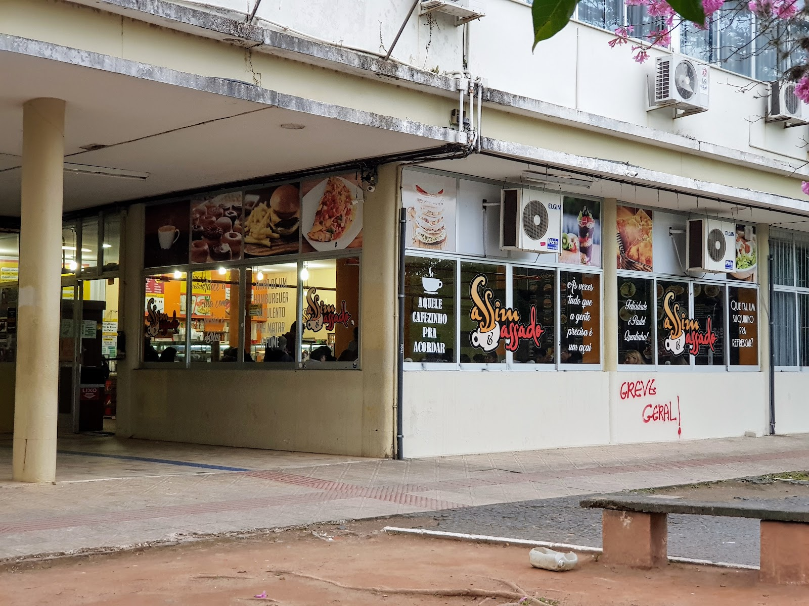
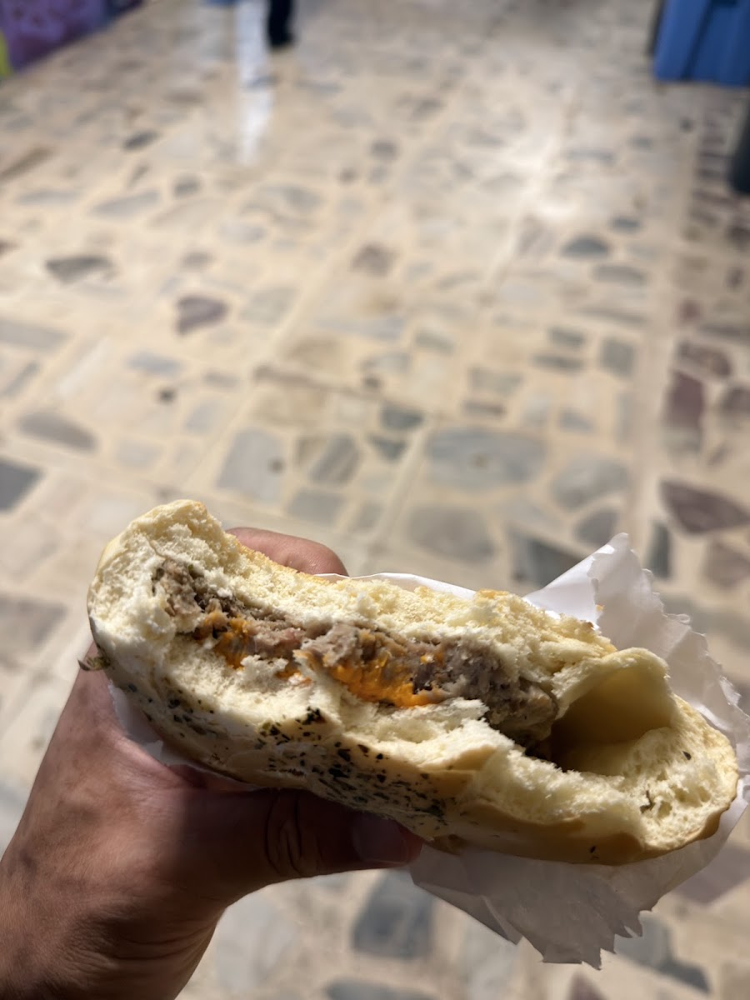
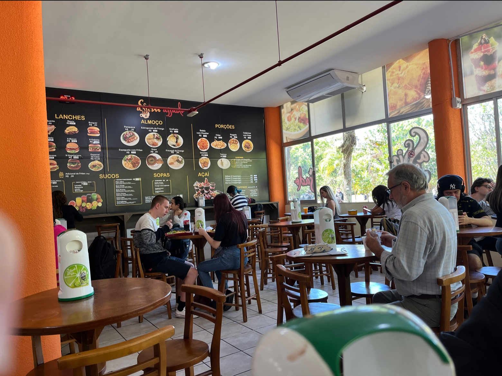
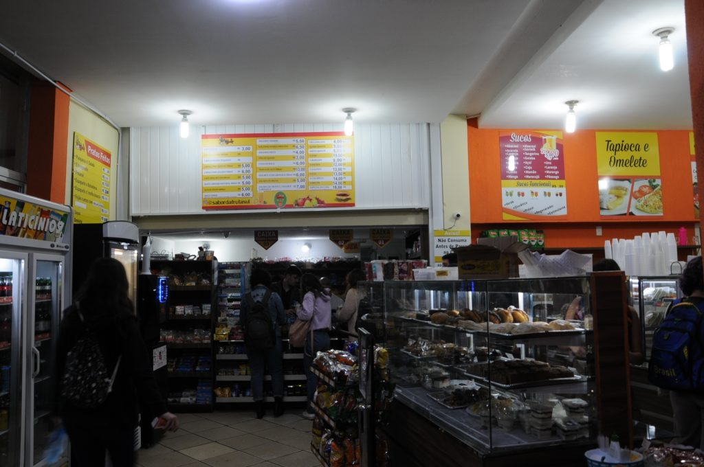

Localizada em frente ao campus da UFSC, a Assim Assado é a parada obrigatória de quem busca salgados dourados saindo do forno, pastéis crocantes fritos na hora, pratos executivos no capricho e sucos naturais para renovar as energias.
Passado na hora • Grãos tostados na medida • Expresso encorpado



Escolha seu salgado favorito, a bebida ideal e finalize com uma sobremesa. Calcule na hora e adiante seu pedido no balcão!
Sem fotos genéricas de banco de imagens. Conheça o espaço real da Assim Assado registrado por quem frequenta.

Balcão de AtendimentoAvaliações reais publicadas espontaneamente no Google Maps por estudantes, professores e visitantes.
"Sou cliente assíduo! Toda vez que visito a UFSC tenho que passar nessa lanchonete. O preço é acessível. Tem muitas opções de doces e salgados. Recomendo."
"Tem guaravitaaa bem gelado, quem é carioca vai entender! O lanche é muito bom, o atendimento é prestativo e salva demais nos intervalos das aulas."
"Ótimo espaço para almoçar ou fazer um lanche reforçado. As opções de pratos executivos e panquecas saem rápido e os salgados assados são sempre fresquinhos."
Situada estrategicamente na Trindade, a poucos passos dos principais centros de ensino e da rotina acadêmica.
Rua Roberto Sampaio Gonzaga, 273
Bairro Trindade — Florianópolis, SC • CEP 88040-380
(Em frente ao campus da UFSC)Segunda a Sexta: 07:00 às 20:30
Sábado e Domingo: Fechado (acompanha o calendário do campus)
Consumo no local em mesas confortáveis • Retirada rápida no balcão para levar • Almoço executivo